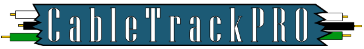
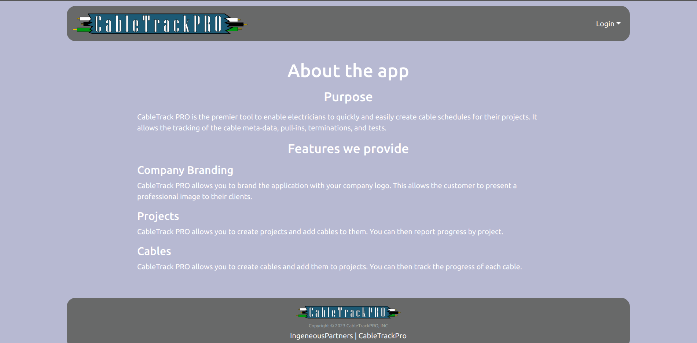

CableTrack PRO is the premier tool to enable electricians to quickly and easily create cable schedules for their projects. It allows the tracking of the cable metadata, pull-ins, terminations, and tests.
CableTrack PRO allows you to brand the application with your company logo. This allows the customer to present a professional image to their clients.
CableTrack PRO allows you to create projects and add cables to them. You can then report progress by project.
CableTrack PRO allows you to create cables and add them to projects. You can then track the progress of each cable.

CableTrack PRO development was managed via issue-driven approach using milestones as projects.
In Milestone 1, we concentrated on laying out foundational functionality, primarily the components that will be used to create the pages. My primary task was to create Mockups in Figma, Logo in Adobe Illustrator and populate the organization’s webpage with the designs.
In Milestone 2, we were putting together the pages utilizing the components created during M1. My main task was to implement the mockups into actual web pages, create user page and update the organization’s website with the actual screenshots from the website.
In Milestone 3, we were writing tests and documentation. I wrote tests for sign-in and sign-up pages and updated the organization’s page with the latest updates.
First of all, I wanted to start learning JavaScript but never really had a strong reason for it, so I am glad that I took this class. JavaScript really seemed like a very powerful language especially for web development. Both backend and frontend can be written in one language which is a huge advantage. I really enjoyed that the class is not solely theory focused but a balance of theory and practice. Finally, I got comfortable working with version control system, such GIT, which I think is going to make my future project much more manageable and structured.
Project’s source code: CableTrackPro
Organization’s web-page: Ingenious Partners